조경산업기사 (2007-03-04 기출문제)
1과목: 조경계획 및 설계
1. 전통정원에는 차경(借景)이라고 해서 외부의 아름다운 경관을주택의 거실이나 안방 창문 너머로 바라볼 수 있도록 배려한 경우들이 많은데, 이는 경관형성의 우세 원칙 가운데 어떤 원칙을 적용한 것인가?
- 대비효과
- 연속효과
- 집중효과
- 조형(組型)효과
(정답률: 98%)

2. K.Lynch의 도시 이미지(image)분석 항목 중 기점과 종점, 연속성, 방향성 등으로 그 성격을 대신할 수 있는 것은?
- 도로(path)
- 지구(district)
- 결절점(node)
- 랜드마크(land mark)
(정답률: 알수없음)
3. 지형은 몇 가지 방법에 의해 옥외공간을 형성하고 한정 지을 수 있다. 지형으로써 공간 지각에 영향을 주는 3가지 변수에 해당되지 않는 것은?
- 공간의 바닥면
- 위요하는 사면의 경사 정도
- 수평 및 외형선
- 광선 및 음영
(정답률: 80%)
4. 기본계획안에 포함되는 토지이용계획에 대한 설명으로 가장 적합한 것은?
- 토지가 지닌 본래의 잠재력이 기본적 고려사항이다.
- 토지이용의 종류는 항상 일정하다.
- 한 지역은 한 가지의 용도에만 적합하다.
- 이용행위의 기능적 특성은 토지이용과는 관계가 없다.
(정답률: 80%)
5. 다음 중 이용 후 평가(post occupancy evaluation)의 설명으로 틀린 것은?
- 기존 환경의 개선 및 새로운 환경의 창조를 위한 자료를 제공한다.
- 이용자의 만족도를 제시한다.
- 설계 과정을 일방향적 흐름으로부터 순환과정으로 바꾸었다.
- 시공 직후에 평가를 수행한다.
(정답률: 69%)
6. 마리나(marina)의 입지조건으로 적당하지 않은 것은?
- 공기가 맑고 경관이 수려한 곳
- 해상의 기상 변화가 다양한 곳
- 대도시로부터 교통거리 1~2시간 이내인 곳
- 일반 황로로부터 격리되어 붐비지 않는 곳
(정답률: 40%)
7. 자연공원법에서 분류하여 정의된 공원의 종류가 아닌 것은?
- 국립공원(國立公園)
- 도립공원(道立公園)
- 시립공원(市立公園)
- 군립공원(郡立公園)
(정답률: 70%)
8. 조경계획의 접근방법 중 어떤 레크리에이션 활동에의 과거 참가사례가 앞으로의 레크리에이션 기회를 결정하도록 계획하는 S.Gold의 접근방법은?
- 자원접근방법
- 활동접근방법
- 경제접근방법
- 행태접근방법
(정답률: 알수없음)
9. 최대시의 이용자 수가 2000명, 주차장 이용률이 90%, 차량 1대당 수용인원 수는 20명, 1대당 주차면적은 40m2라면 주차장의 면적은?
- 1600m2
- 2400m2
- 3600m2
- 4000m2
(정답률: 알수없음)
10. 1850년에서 1900년 사이 일어난 소정원 운동을 주도한 대표적 인물은?
- 루우돈(John Charles Loudon)
- 베리(Sir Charles Barry)
- 로빈슨(William Robinson)과 재킬여사(Gertrude Jeckyll)
- 로렌스 헬프린(Lorence Helprin)
(정답률: 77%)
11. 항공사진이 기초가 되어 현장조사를 통해 토양분석을 목적으로 만들어진 정밀토양도(情密土壤圖)의 축적은?
- 1:5000
- 1:10000
- 1:25000
- 1:50000
(정답률: 75%)
12. 먼셀 표색계로 표시한 G8/1과 5/1의 차이는?
- 색상과 채도는 같지만 명도가 다르다.
- 색상과 명도는 같지만 채도가 다르다.
- 명도와 채도는 같지만 색상은 다르다.
- 전자는 광선, 후자는 물감의 색채를 말한다.
(정답률: 55%)
13. G. Eckbo(1978)는 새로운 정원 형태를 4가지로 분류하였는데 다음 중 4가지 형태에 해당되지 않는 것은?
- 기하학적ㆍ구조적 정원(geometric-structural garden)
- 기하학적ㆍ자연적 정원(geometric-natural garden)
- 자연적ㆍ구조적 정원(natural-structural garden)
- 정형식 정원(formal garden)
(정답률: 60%)
14. 고대 바빌론(Babylon)의 공중정원(空中庭園)은 어느 왕에 의하여 만들어 졌는가?
- 하드라이누스(Hadrianus)왕
- 햇셉수으트(Hatschepsut)왕
- 아메노피스(Amenophis)3세
- 네부카드넷자르(Nebuchadnezzar)왕
(정답률: 알수없음)
15. 고려시대와 관련된 원림(園林)의 건축물은?
- 임해천, 포석정
- 임류각, 망해정
- 주합루, 부용정
- 귀령각, 태평정
(정답률: 47%)
16. “계획 과정에서의 대중참여(Public Participation)를 확대해야한다.”라는 내용이 의미하는 것은?
- 이용자의 수요, 기호, 가치기준 등을 계획내용에 적극 반영하기 위함이다.
- 차후 발견될 수 있는 잘못된 계획내용에 대한 계획가의 책임을 면하기 위함이다.
- 대중 참여도를 참고로 하여 장래 이용자 추계를 하고자 함이다.
- 대중 참여를 유도하여 계획에 소요되는 경비를 절갑하기 위함이다.
(정답률: 알수없음)
17. 다음 주제공원(theme park)에 대한 설명 중 틀린 것은?
- 조각공원은 환경조각이라는 하나의 주제를 놓고 다양한 형태를 표현하면서 시민공원으로 활용되게 하는 형태이다.
- 모험공원은 어린이에게 모험심을 길러주고 어린이들이 스스로 무엇이든지 할 수 있게 조성한 장소이다.
- 안전공원(safety park)이란 소방훈련, 대피훈련을 하거나 관련 분야의 전시를 통하여 안전의식을 고취하고자 하는 공원이다.
- 교통공원이란 직접적으로 교통의 혼잡을 체험하기 위해 교통량이 많은 곳에 설치한 공원이다.
(정답률: 82%)
18. 모든 종류의 설계도, 상세도, 그리고 수량 산출서, 일위대기표, 공사비, 시방서, 공정표 등의 서류가 작성되는 계획 설계의 단계는?
- 실시설계
- 기본계획
- 종합 및 평가
- 조사분석
(정답률: 알수없음)
19. 일반적으로 적용하는 공원 및 묘지, 골프장의 우수유출계수(雨水流出係數)로 가장 적합한 것은?
- 0.75~0.95
- 0.50~0.70
- 0.30~0.45
- 0.10~0.25
(정답률: 42%)
20. 녹지자연도란 식물군락의 자연성 정도를 등급화한 지도를 말하는데 다음 중 녹지자연도의 등급이 가장 높은 곳은?
- 2차 초원
- 고산자연 초원
- 조림지
- 2차림
(정답률: 59%)
2과목: 조경식재
21. 운전을 하는 운전자에게 현재의 위치, 시설지의 위치 및 풍향, 풍속 등을 알려주기 위해 사용되는 식재 방법은?
- 시선유도식재
- 지표식재
- 차폐식재
- 경관식재
(정답률: 알수없음)
22. 부등변삼각형 식재를 기본형으로 삼아 그 삼각망을 순차적으로 확대해 가는 방법으로 수목을 식재하는 패턴은?
- 교호 식재
- 루버형 식재
- 랜덤 식재
- 번개형 식재
(정답률: 37%)
23. 굴취시 수목 규격 표시를 흉고직경(B)을 기준으로 하는 수종은?
- Zizyphus jujuba
- Cydonia sinensis
- Ailanthus altissima
- Zelkova serrate
(정답률: 50%)
24. 일반적으로 수목을 식재할 경우 식재 구덩이의 최소 크기 기준은?
- 뿌리분 지름의 1배 이상 크기
- 뿌리분 지름의 1.5배 이상 크기
- 뿌리분 지름의 2배 이상 크기
- 뿌리분 지름의 2.5배 이상 크기
(정답률: 50%)
25. 고속도로의 터널입구로부터 300m 구간의 갓길을 따라 상록 교목을 열식하였다. 다음 중 이곳에 적용된 식재 방법은?
- 차광 식재
- 명암순응 식재
- 진입방지 식재
- 시선유도 식재
(정답률: 80%)
26. 목련과에 속하지 않는 수종은?
- 일본목련
- 함박꽃나무
- 백합나무
- 동백나무
(정답률: 57%)
27. 절개지의 지력이 낮은 토양에서 지력을 증진시키기 위해 식재하는 비료목이 아닌 것은?
- Albizzia julibrissin
- Lespedeza bicolor
- Elaeagnus umbellata
- Populus alba
(정답률: 알수없음)
28. 호안 식생복원을 위한 식물선정기분으로 적합하지 않은 것은?
- 정착되기까지의 기간이 긴 식물
- 수위 변동에 잘 견딜 수 있는 식물
- 매년 자연적으로 출현하며 재생능력이 있는 식물
- 수위 변동에 따라 상승과 하강을 반복할 수 있는 생태의 식물
(정답률: 54%)
29. 다음 그림 중 가장 자연스러운 군식 방법은?
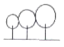
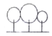
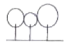
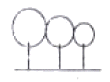
(정답률: 75%)
30. 다음 중 도서생물지리설에 대한 설명으로 맞는 것은?
- 섬의 크기가 작을수록 종 다양성이 높고 종조성이 안정적이다.
- 섬이 본토와 가까울수록 종 다양성이 낮고 종조성이 불안정하다.
- 이 이론에서 말하는 섬(island)은 실제 섬만을 의미하는 것이 아니라 생태학적 섬, 즉 단편화(fragmentation)된 서식지를 의미한다.
- 이 이론은 레크리에이션을 위주로 하는 도시공원의 계획시에 적용되는 이론이다.
(정답률: 30%)
31. 다음 중 이식(移植)하기 가장 어려운 수종은?
- Magnolia grandiflora
- Celtis sinensis
- Platanus occidentalis
- Firmiana simplex
(정답률: 55%)
32. 토양 층이 깊은 곳에 식재를 해야 하는 심근성(深根性) 수종으로만 바르게 나열된 것은?
- 미루나무, 사시나무
- 자작나무, 황철나무
- 느티나무, 은행나무
- 버드나무, 가문비나무
(정답률: 47%)
33. 뿌리돌림을 하는 목적이 아닌 것은?
- 귀중한 수목으로 안전하게 활착을 유도
- 노거수 또는 대목의 수세 회복
- 직근성으로 식재 전 잔뿌리 발생이 요구되는 어린나무
- 수목을 이식할 경우 이동의 용이성
(정답률: 50%)
34. 추이대(Ecotone)에 대한 설명으로 틀린 것은?
- 생태적 중요성이 높다.
- 둘 이상의 유사한 군집이 모여 있는 곳이다.
- 갯벌은 대표적인 추이대이다.
- 생물종 다양성이 높은 경향이 있다.
(정답률: 55%)
35. 임해매립지 녹화를 위한 수종선정 및 배식방법에 대한 설명으로 옳은 것은?
- 가능한 한 내륙 지역의 자생수종을 선정한다.
- 식재밀도를 높게 하여 되도록 바람의 피해를 줄인다.
- 선정 수종이 이식이 쉬우면 염해에 약한 수종을 선정해도 좋다.
- 해안선에 바로 붙여 수목을 식재한다.
(정답률: 86%)
36. 고속도로 중앙분리대에 식재할 수종 중 차광 효과가 가장 높은 수종은?
- Osmanthus fragrans
- Camellia japonica
- Euonymus japonica
- Juniperus chinensis
(정답률: 54%)
37. 다음 식물 중 봄철에 가장 일찍 꽃이 피는 것은?
- 꽃양배추
- 팬지
- 양귀비
- 페튜니아
(정답률: 67%)
38. 근원직경이 15cm인 수목을 4배 접시분으로 분뜨기를 한 경우 지상부를 제외한 분의 중량은? (단, 뿌리분의 단위 중량은 1.3t/m3이고, 원주율 π는 3.14로 한다.)
- 0.11 ton
- 0.21 ton
- 0.25 ton
- 0.32 ton
(정답률: 40%)
39. 다음 중 배롱나무의 학명으로 옳은 것은?
- Punica granatum
- Lagerstroemia indica
- Taxus cuspidata
- Abies koreana
(정답률: 75%)
40. 다음 중 지주(支株) 설치시의 설명으로 틀린 것은?
- 당김줄형은 거목이나 경관적 가치가 특히 요구되는 곳에 수고의 2/3 높이에 결박한다.
- 수고 4.5m 이하의 수목은 이각형, 삼각형, 사각형을 설치하며, 지주의 경사각은 30°이상으로 한다.
- 수고 1.2m 이하의 수목은 특별히 필요하다고 인정될 때 단각형을 설치한다.
- 매몰형(埋沒型)은 해당 수목의 식재가 경관상 매우 중요한 위치일 때에 설치한다.
(정답률: 70%)
3과목: 조경시공
41. 토목공사에서 토사채취의 품셈을 0.20인/m3으로 할 때 100m3의 토사를 2일간에 다 채취를 하려면 하루에 동원해야 하는 인부 수는?
- 5인
- 10인
- 40인
- 250인
(정답률: 69%)
42. 다음 토적 계산 공식 중 각주공식으로 옳은 것은? (단, A1, A2:양단면적, Am: 중앙단면적, L:길이)
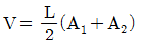
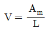
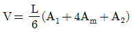
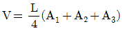
(정답률: 59%)
43. 다음과 같은 단순보에서 B 지점의 반력은?
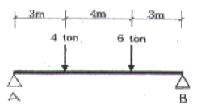
- 5.0 ton
- 5.4 ton
- 6.0 ton
- 6.4 ton
(정답률: 알수없음)
44. 1/200 축척의 도면에서 놀이터의 모래사장 면적을 cm 자로 재었더니 9cm2이었다. 실제 면적은?
- 3600m2
- 360m2
- 36m2
- 3.6m2
(정답률: 알수없음)
45. 목재의 벌목시 무게가 20kg이고, 절대건조시의 무게가 15kg일 때 이 목재의 함수율(%)은?
- 약 12%
- 약 25%
- 약 33%
- 약 75%
(정답률: 50%)
46. 철근콘크리트에 관한 설명 중 틀린 것은?
- 콘크리트의 부착력은 철근의 주장과 길이에 비례하여 진다.
- 철근콘크리트는 내진성과 내화성을 높인다.
- 철근은 콘크리트와 열에 대한 평창ㆍ수축이 거의 일치한다.
- 사용되는 철근은 이형철근 보다는 주로 원형철근이 사용된다.
(정답률: 77%)
47. 다음 안식각에 대한 설명 중 틀린 것은?
- 수평면과 경사면이 이루는 안정된 각을 안식각이라 한다.
- 일반적인 흙의 안식각은 20°~40°이며, 보통 30°정도로 한다.
- 흙의 입자가 작을수록 안식각은 커진다.
- 비탈경사를 안식각 이하로 하면 안정도가 커진다.
(정답률: 67%)
48. 다음 그림과 같은 보의 종류 명칭은?
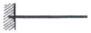
- 단순보
- 캔틸레버보
- 내티지보
- 고정보
(정답률: 알수없음)
49. 다음 중 시공순서가 방수액 침투 → 시멘트 풀 바름 → 방수액 침투 → 보호 모르타르 바름의 공정으로 된 방수법은?
- 시멘트 액체 방수
- 도막 방수
- 시트 방수
- 시일재 방수
(정답률: 65%)
50. 시공관리의 주 목표 내용이 아닌 것은?
- 공정관리
- 유지관리
- 원가관리
- 품질관리
(정답률: 62%)
51. 일위대가표를 작성할 때 일위대가표의 계 금액의 단위 표준은 어떻게 적용시키는가?
- 0.1원까지는 쓰고 그 이하는 버린다.
- 1원까지는 쓰고 그 미만은 버린다.
- 0.1원까지는 쓰고 소수위 2위에서 사사오입한다.
- 1원까지 쓰고 소수위 1위에서 사사오입한다.
(정답률: 53%)
52. Net work 공정표에서 Dummy의 표시 기호로 옳은 것은?
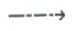
(정답률: 59%)
53. 다음 중 지하수를 낮추기 위하여 차수멱을 설치하는 배수 방법은?
- 수평배수공법
- 집수정공법
- 배수터널공법
- 지하수차단공법
(정답률: 46%)
54. 다음 보차도용 인터로킹 블록 종류 중 이형블록이 아닌 것은?
- O형
- S형
- R형
- Z형
(정답률: 54%)
55. 다음 구조물과 관련된 설명 중 틀린 것은?
- 정지상태의 구조물은 하중과 반력에 의해 힘의 평형을 이루고 있다.
- 하중이 반력보다 클 경우 구조물은 정지상태에서 벗어나게 된다.
- 구조물에 하중이 작용하게 되면 하중이 작용한 점에 반력이 생긴다.
- 지점에 생기는 반력의 종류는 수평반력, 수직반력, 모멘트 반력이 있다.
(정답률: 64%)
56. 고정원(고정원)의 사괴석 담장에 적합하도록 사용되는 줄눈의 형태는?
- 평줄눈
- 내민줄눈
- 빗줄눈
- 오목줄눈
(정답률: 31%)
57. 다음 공정표에서 크리티칼 패스(critical path)에 해당되는 과정은?
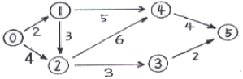
- 0-1-4-5
- 0-2-3-5
- 0-1-2-3-5
- 0-1-2-4-5
(정답률: 50%)
58. 다음 구조 재료별 단위 중량으로 옳은 것은?
- 철근 콘크리트(자연상태) - 2400kg/m3
- 무근 콘크리트(자연상태) - 1500kg/m3
- 화강석(자연상태) - 2400kg/m3
- 소나무(KSD 3695) - 300kg/m3
(정답률: 27%)
59. 담장 붕괴를 발생 시키는 기초부 부동침하(不同沈下)의 주요 원인에 속하지 않는 것은?
- 이질지층(異質地層)
- 연약지만(軟弱地盤)
- 지하수위 변경(地下水位變更)
- 과하중(過荷重)
(정답률: 59%)
60. 운반거리 100m를 리어카로 토사류를 운반하려 한다. 이 중 40m는 평지이고, 나머지는 경사도가 10%인 경사지이다. 경사지의 환산계수가 2일 때, 총 환산거리는?
- 100m
- 140m
- 160m
- 180m
(정답률: 59%)
4과목: 조경관리
61. 다음 중 흰가루병이 잘 발생하지 않는 수종은?
- 배롱나무
- 장미
- 향나무
- 벚나무
(정답률: 50%)
62. 흰불나방 구제를 위하여 살충제 50% 유제를 0.⑤%(1000배) 농도로 하여 ha당 1000L를 살포하고자 한다. ha당 소요되는 원액량은?
- 1000cc
- 1500cc
- 2000cc
- 2500cc
(정답률: 40%)
63. 다음 중 농약 살포 방법으로 옳은 것은?
- 심한 태풍이나 비바람이 지나간 직후에 살포한다.
- 살충제와 살균제를 혼합 사용하며, 기온이 높을수록 좋다.
- 살충제 중 독한 약제는 흐린 날 살포하는 것이 좋다.
- 전착제를 완전히 용해 시킨 뒤 살포액에 넣는 것이 좋다.
(정답률: 50%)
64. 포장의 표면배수 구배(기울기) 중 특별히 규정하지 않는 한 일반적인 원로, 보행자도로, 자전거도로의 구배로 적합한 것은?
- 1.5~2.0%
- 2.5~3.0%
- 3.5~4.0%
- 4.5~5.0%
(정답률: 알수없음)
65. 수심이 깊은 연못 등의 위험한 장소에 접근 방지용 펜스(fance)를 설치하지 않아 발생하는 사고의 경우 해당되는 하자는?
- 설치하자
- 관리하자
- 이용자 부주의
- 주최자 부주의
(정답률: 40%)
66. 박쥐나방에 대한 설명 중 옳은 것은?
- 거미류에 속하는 작은 해충으로 고온건조기에 심하게 발생한다.
- 동수화제나 석회유황합제가 효과적이다.
- 주로 소나무, 벚나무, 전나무 등에 피해가 심하다.
- 성충은 수피에 구멍을 뚫어 가해하므로 육안으로 피해 식별이 용이하다.
(정답률: 59%)
67. 조경관리의 운영에서 이용지도의 목적 구분에 해당되지 않은 것은?
- 공원녹지의 보전
- 안전ㆍ쾌적이용
- 유효이용
- 운영관리
(정답률: 50%)
68. 옥외 조명등의 광원별 유형 중 형광등의 특성으로 옳은 것은?
- 수명이 비교적 같다.
- 빛이 둔하고 흐려서 물체나 건물을 강조하는데 이용할 수 없다.
- 빛의 조절이나 통제가 쉬우며, 색채연출도 쉽다.
- 열효율이 높고 투시성이 뛰어나다.
(정답률: 40%)
69. 잔디에 거름 주는 요령으로 틀린 것은?
- 잔디의 거름은 지효성을 필요로 할 때는 닭똥가루와 깻묵가루를 시비한다.
- 일반적으로 질소, 인산, 칼륨의 성분 비는 3:1:2 정도로 한다.
- 캔터키블루그래스는 최소한 3~4회로 나누어 시비하며 7~8월에도 시비하는 것이 좋다.
- 뗏밥과 섞어줄 때에는 관수 하지 않아도 된다.
(정답률: 34%)
70. 수목의 단근작업(뿌리끊기)를 하는 이유로서 틀린 것은?
- 뿌리와 지상부의 균형유지를 위하여
- 수목의 도장방지를 위하여
- 수목의 비대성장을 위하여
- 이랫가지 발육을 좋게 하기 위하여
(정답률: 50%)
71. 다음 중 정원이나 밭에 많이 발생하는 잡초가 아닌 것은?
- 바랭이
- 여뀌
- 일꽃
- 쑥부쟁이
(정답률: 40%)
72. 측백하늘소 성충의 발생 및 산란시기로 가장 적합한 것은?
- 12~1월
- 3~4월
- 6~7월
- 9~10월
(정답률: 39%)
73. 진딧물의 천적에 속하지 않는 것은?
- 기생벌류
- 나방류
- 무당벌레류
- 풀 잠자리류
(정답률: 50%)
74. 콘크리트 면이 균열되었을 때 보수하기 위한 재료로 부적합한 것은?
- 진흙
- 접착제(프라이머)
- 시멘트 풀(Paste)
- 아스팔트 모르타르
(정답률: 75%)
75. 아스팔트 포장의 파손유형 중 아스팔트 및 골재가 떨어져 나가는 현상은?
- 균열
- 박리
- 표면연화
- 국부적 침하
(정답률: 알수없음)
76. 다음 중 잔디의 잎과 줄기에 뷸규칙한 황녹색 또는 황갈색의 정이 마치 동전처럼 무수히 나타나며, 주로 초여름과 초가을에 발병하는 것은?
- 붉은 녹병(Rust)
- 달라 스폿(Dollar spot)
- 잔디 탄저병(Anthracmose)
- 브라운 패취(Brown patch)
(정답률: 72%)
77. 구조물에 의한 비탈면 유지관리 설명으로 틀린 것은?
- 비탈면에 용수가 우려되고 침투수가 있는 곳은 배수 구멍 없이 모르타르 뿜어 붙이기를 하여 안정시킨다.
- 돌망태는 철선의 부식상태를 점검하여야 한다.
- 낙석 방지책에서는 낙석 또는 토사의 퇴적과 기초부의 풍화 또는 붕괴를 점검한다.
- 콘크리트 격자공을 실시한 곳은 격자 내의 이상 여부를 점검하고, 격자 뒷면의 토사 유실을 점검한다.
(정답률: 82%)
78. 자연공원지역의 관리에 관한 설명 중 틀린 것은?
- 이용자에 의한 환경적 생태적 반응은 단일한 것이 없고 대개 서로 상호 관련되어 나타난다.
- 좋은 모니터링이란 측정기법이 신뢰성 있고 민감해야하며, 가능하면 많은 비용을 들여 정밀하게 조사해야 한다.
- 자연공원지역에서는 특히 쉽게 소각시킬 수 없는 다양한 쓰레기들이 수집하기 곤란한 지역에 폭넓게 분포하는 경우가 많다.
- 자연공원지역을 자원중심형의 레크리에이션 공간으로서 관리하는 것도 이용보다는 자원보전이라는 관점에서 보는 것이 바람직하다.
(정답률: 64%)
79. 다음 철재의 용접불량 상태를 나타낸 단면 중 용입부족에 해당되는 것은?
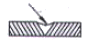
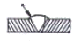
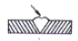
(정답률: 82%)
80. 현장에서 수목의 흉고 직경을 측정해야 되나 측정기구인 윤척이나 직경테이프가 없어서 줄자로 흉고 둘레를 재어 보았더니 80cm 이었다. 이를 흉고 직경으로 환산한 값은?
- 약 12cm
- 약 25cm
- 약 50cm
- 약 75cm
(정답률: 알수없음)